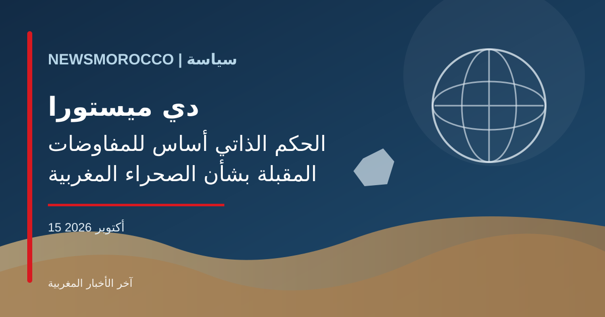

دي ميستورا: الحكم الذاتي المغربي أساس للمفاوضات المقبلة بشأن الصحراء

عاد ملف الصحراء المغربية إلى واجهة النقاش الدبلوماسي، بعد إحاطة قدمها ستافان دي ميستورا، المبعوث الشخصي للأمين العام للأمم المتحدة، أمام مجلس الأمن في 8 أكتوبر الجاري، وفق تقارير صحفية مغربية نشرت تفاصيلها هذا الأسبوع.
وبحسب هذه التقارير، أقر دي ميستورا بأن المسار السياسي يواجه حالة من الجمود، داعياً إلى توضيح بعض جوانب القرار رقم 2797 بما يساعد على دفع المفاوضات المقبلة، مع جعل مقترح الحكم الذاتي المغربي أساساً للمناقشات.
وأشارت التغطيات إلى أن المقترح المغربي المفصل يحتاج إلى مزيد من النقاش والتفاوض قبل الوصول إلى صيغة نهائية. كما تظل الخلافات وانعدام الثقة بين الأطراف من أبرز العوائق التي تحول دون إحراز تقدم حاسم في العملية السياسية.
ويعني ذلك أن التطور الحالي يرتبط بإطار المفاوضات واتجاهها، ولا يمثل إعلاناً عن تسوية نهائية للنزاع أو اتفاق تم التوصل إليه بالفعل.
وتواصل الأمم المتحدة جهودها لتيسير العملية السياسية، فيما تبقى الخطوات المقبلة مرتبطة بمواقف الأطراف واستعدادها للمشاركة في مفاوضات جدية من أجل حل سياسي متوافق عليه.
← العودة إلى الصفحة الرئيسية